Landskrona
Komplett byte av fönsterdörr
Ett projekt där den befintliga fönsterdörren ersattes med ett nytt komplett dörrparti inklusive karm.
Arbetet omfattade demontering, montering, drevning, tätning, foder och tillhörande snickeriarbeten.

Gratis offertDin lokala snickare
Noggrant utförda fönsterbyten och dörrbyten med fokus på funktion, energieffektivitet och ett hållbart resultat.
F. Bergstrand Bygg AB hjälper privatpersoner och företag med allt från byte av en enstaka dörr till kompletta fönsterbyten och installationer vid större byggprojekt.
Fönsterbyte och dörrbyte
Fönster och dörrar är viktiga delar av en byggnads konstruktion. De påverkar både inomhusklimat, energiförbrukning, säkerhet och husets utseende.
Ett korrekt utfört montage handlar om mer än att bara sätta ett nytt fönster eller en ny dörr på plats. Infästning, drevning, tätning och anslutningar mot den befintliga konstruktionen behöver utföras med omsorg.
Med över 10 års erfarenhet inom byggbranschen hjälper jag dig att hitta en lösning som passar fastighetens förutsättningar och dina önskemål.
Jag hjälper dig med hela arbetsmomentet, från demontering av befintliga fönster och dörrar till montering, tätning och färdigställande av anslutande snickerier.
Om det finns skador i den bakomliggande konstruktionen kan jag även hjälpa till med nödvändiga reparationer. Vid behov samordnar jag arbetet med plåtslagare för exempelvis fönsterbleck och andra plåtanslutningar.
Komfort och energieffektivitet
Äldre eller slitna fönster kan bidra till drag, värmeförluster och försämrad komfort. Ett välplanerat fönsterbyte kan förbättra inomhusmiljön och minska byggnadens värmeförluster genom fönstren.
Jag hjälper dig oavsett om du vill behålla husets ursprungliga karaktär eller ge byggnaden ett modernare uttryck.
Arbetet anpassas efter fönstertyp, väggkonstruktion och fastighetens befintliga förutsättningar.
Dörrar och skjutpartier
En ytterdörr ska tåla väder och vind, fungera i vardagen och samtidigt passa husets utseende. Även innerdörrar, altandörrar och större glaspartier behöver monteras korrekt för att fungera som avsett.
Jag hjälper dig med både utbyte av befintliga dörrar och installation av nya dörrpartier vid renoveringar, tillbyggnader och nyproduktion.
Behöver öppningen anpassas eller den omkringliggande konstruktionen byggas om kan jag även hjälpa till med dessa arbeten.
Utfört arbete
Ett exempel på ett utfört dörrbyte av F. Bergstrand Bygg AB.
Landskrona
Ett projekt där den befintliga fönsterdörren ersattes med ett nytt komplett dörrparti inklusive karm.
Arbetet omfattade demontering, montering, drevning, tätning, foder och tillhörande snickeriarbeten.
Så går det till
Du berättar om vilka fönster eller dörrar du vill byta och vilka önskemål du har.
Vi går igenom mått, material, förutsättningar och arbetets omfattning. Du får en kostnadsfri offert.
Befintliga partier demonteras vid behov och de nya monteras, isoleras och tätas.
Anslutande snickeriarbeten färdigställs och vi går igenom det utförda arbetet.
ROT-avdrag
Byte av fönster och dörrar i en befintlig bostad kan ge rätt till ROT-avdrag, förutsatt att arbetet och du som beställare uppfyller Skatteverkets villkor.
ROT-avdraget gäller arbetskostnaden och inte material eller övriga kostnader. Jag hjälper dig med hanteringen av avdraget när arbetet är berättigat till ROT.
Läs mer om aktuella regler hos Skatteverket.
Lokalt byggföretag
F. Bergstrand Bygg AB utgår från Ängelholm och hjälper kunder i stora delar av nordvästra Skåne och södra Halland.
Jag utför fönsterbyten, dörrbyten och andra snickeriarbeten i bland annat Ängelholm, Båstad, Höganäs, Helsingborg, Halmstad, Klippan och Landskrona.
Finns din fastighet utanför dessa orter är du också välkommen att höra av dig, så ser vi över möjligheterna.
Vanliga frågor
Kostnaden beror bland annat på antal fönster, storlek, konstruktion, material och omfattningen av anslutande arbeten. Kontakta mig för en kostnadsfri offert anpassad efter ditt projekt.
Ja. Jag hjälper dig med både mindre arbeten, exempelvis byte av ett enstaka fönster, och kompletta fönsterbyten.
Ja. Jag kan hjälpa dig med installation av fönster och dörrar som du själv har köpt. Vi går gärna igenom mått och förutsättningar innan beställning.
Ja. Jag utför kompletta byten inklusive karm, drevning, tätning, foder och andra anslutande snickeriarbeten enligt överenskommen omfattning.
Energieffektiva fönster kan minska värmeförluster och förbättra komforten. Resultatet beror bland annat på befintliga fönster, nya fönsters egenskaper och hur installationen utförs.
Det beror på byggnaden, fastighetens läge och vilka förändringar som görs. Vid ändringar av exempelvis storlek, placering eller utseende bör du kontrollera vilka regler som gäller hos kommunen.
Ja. Jag hjälper till med montering av skjutpartier och anpassning av öppningar utifrån byggnadens konstruktionsmässiga förutsättningar.
Om skador upptäcks i samband med demonteringen går vi igenom vilka åtgärder som behövs innan eventuella tillkommande arbeten utförs.
Fönsterbyten och dörrbyten kan omfattas av ROT-avdrag när Skatteverkets villkor är uppfyllda. Jag hjälper dig med hanteringen.
Ja. Du är välkommen att kontakta mig för en kostnadsfri offert utan köpkrav.
Fler byggtjänster
Fönster- och dörrbyten är ofta en naturlig del av större renoveringar och fasadarbeten. F. Bergstrand Bygg AB hjälper dig även med andra delar av byggprojektet.
Kontakta mig
Berätta om ditt projekt så går vi tillsammans igenom dina önskemål och förutsättningar. Jag hjälper dig från planering till färdigt resultat.
Kontakta F. Bergstrand Bygg AB för en kostnadsfri offert.
F. Bergstrand Bygg AB
Ängelholm